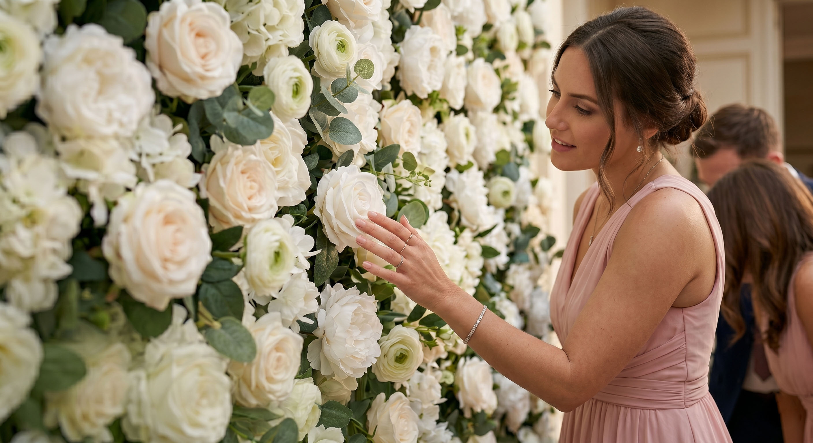

Floral realism that leaves your guests in awe
We use premium-grade materials that, in both appearance and touch, closely replicate real flower petals (Real Touch). Even when viewed up close, our floral walls look highly realistic and maintain a sense of luxury both in photographs and in real life.
Many artificial floral walls look beautiful only in promotional
photos. Silk flowers often reveal themselves through a characteristic
shine, a visible fabric texture, and even a slight rustling sound
when touched. That is why we set ourselves the goal of creating
floral walls that inspire genuine admiration through their realism.
We selected a material that closely replicates the look and texture
of real flower petals (Real Touch technology). This level of realism
creates a sense of premium decor and makes the floral wall feel like
a natural part of the celebration atmosphere. Many guests do not
immediately realize that the flowers are artificial, and some even
come closer to smell them. Your guests will admire the beauty of the
decor, while your photos will look even more luxurious and natural.